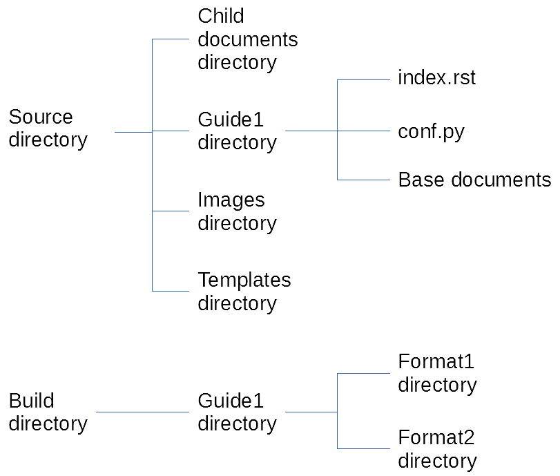

Directory Structure¶
Before getting into the meat of a project and writing the documents, I recommend having a serious think about your directory structure.
Why does it matter?¶
The source directory structure that you choose will end up embedded in a lot of documents. That includes configuration files and every single internal hyperlink created. It’s possible to go back through and change things later, but it’s also a pain in the neck.
Basic project file structure¶
Each Sphinx documentation project needs the following directories and files:
- Source directory – contains all the source material, arranged in directories, for a project.
- Master file (by default, called index.rst) – this is the backbone of a manual that links to all the top-level documents.
- Configuration file (conf.py) – provides information for the build script on how to create various end formats for a manual.
- Images directory – contains all screenshots, diagrams, etc used in the project. If you’re incorporating video and audio files into your doco, this could be a media directory instead, or you could add video and audio directories.
- Templates directory – standard Sphinx directory that contains files it needs to build various end formats for a manual.
- Base documents – think of these as your ‘Heading 1’ documents that you’d want displayed in a basic one-level table of contents.
- Child documents – every other document that might be shared between multiple manuals, or multiple versions of the same manual.
- Build directory – this is where your end product manuals will be saved.
Your project’s directory structure will end up looking something like this:
{kind=link}
You’ll need an master file for every manual that you’ll create, and a conf.py file for every format that you create. Unless you have a huge number of manuals to produce, I suggest you create a conf.py file for every manual. That makes for a simpler build process.
Why use a child-documents directory?¶
When I started my first Sphinx/RST project, I didn’t use a child-documents directory. I found that builds took a long time, and incorporated every single document in the base documents directory into HTML output. It didn’t matter whether I’d linked them into a particular document or not. That was a pain. When users searched the HTML knowledge base, the results could include pages that weren’t supposed to be there.
Then I needed to amend the documentation to allow for two different versions of the same product (free and premium). I ran into even more problems trying to ensure that the right files made it into the right builds. Moral of the story: unless you’re absolutely sure that every file you create will be needed in the final build, and you’ll never have to worry about creating multiple versions of a manual or multiple manuals for a product… use a child-documents directory.
Your initial instinct will probably be to create a child-documents directory for every manual or product. Unless these will have absolutely zero content in common, though, I recommend that you use a top-level child-documents directory instead. You’ll find it easier to locate and link between child documents.
When you use a child-documents directory, you can save build time, improve build sanitation, and optimise your re-use of source material.
Build/document/format or build/format/ ?¶
You might need a different build directory structure to mine. I created mine based on a single document – a user guide – for free and premium editions of the same product.
If you’re creating documentation for multiple products, you might create your directory structure more like this:
Build directory > Product1 directory > Guide1 directory > Format1 directory
Or, if you’re producing multiple documents for the one product – especially if those documents will be merged into a knowledge base – you might create your directory structure like this:
Build directory > Format1 directory
Build directory changes are easier to implement than source directory changes, so don’t worry if you’re not certain right now which structure you’ll need – it will quickly become evident!
Your build directory structure will depend on the number of products, manuals, and formats that you need to produce.